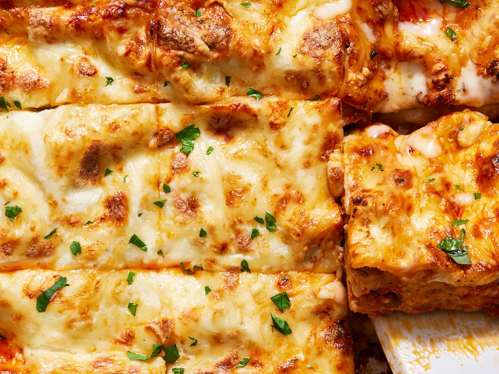

Lasagna

Lasagna is a delicious easy to make dish for everybody
Lasagna is a classic Italian dish made with layers of pasta, rich meat sauce, creamy béchamel sauce, and melted cheese.
Here's a basic recipe for a delicious homemade lasagna:
Ingredients
- Lasagna noodles - 9-12 sheets
- 450g pound beef
- 1 onion
- 3 cloves of garlic
- 1 can crushed tomatoes
- 1 can tomato sauce
- 1 teaspoon dried oregano
- Salt and peber to taste
- 2 cups of shredded mozarella cheese
- 4 tablespoons unsalted butter
- 1/4 cup all-purpose flour
- 4 cups whole milk
- Salt and nutmeg to taste
Steps
- Preheat your oven to 375°F (190°C).
- In a large skillet, cook the ground meat over medium heat until browned. Add chopped onions and garlic, cooking until they are softened.
- Stir in crushed tomatoes, tomato sauce, tomato paste, oregano, basil, salt, and pepper. Simmer the sauce for about 20-30 minutes to allow the flavors to meld.
- In a separate saucepan, melt butter over medium heat for the béchamel sauce. Add flour and whisk continuously for about 2 minutes to create a roux. Gradually add milk, whisking constantly to avoid lumps. Cook until the sauce thickens, then season with salt and a pinch of nutmeg.
- In a baking dish, spread a small amount of meat sauce to coat the bottom. Place a layer of lasagna noodles over the sauce.
- Add a layer of meat sauce, followed by a layer of béchamel sauce, and a sprinkle of both mozzarella and Parmesan cheese. Repeat these layers until you run out of ingredients, finishing with a layer of cheese on top.
- Cover the baking dish with foil and bake for 25-30 minutes. Then, remove the foil and bake for an additional 10-15 minutes or until the cheese is golden and bubbly.
- Allow the lasagna to rest for 10-15 minutes before serving to set and make it easier to slice.